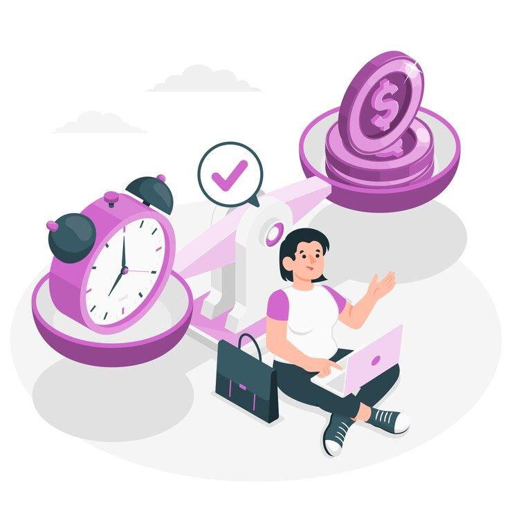

Dynamic Application Security Testing (DAST)
Dynamic Application Security Testing (DAST) is a critical tool for identifying vulnerabilities in web applications during their runtime. Unlike static testing, DAST evaluates the application in its active environment, simulating real-world attacks to uncover weaknesses such as SQL injections, cross-site scripting (XSS), and other vulnerabilities that could be exploited by cybercriminals. This testing method does not require access to the application’s source code, making it ideal for evaluating third-party or legacy applications. With comprehensive risk assessments and actionable reports, DAST helps organizations address security gaps, ensuring that their applications are secure and resilient against evolving threats.

Real-Time Vulnerability Detection
we understand that vulnerabilities are often exploited during runtime, making real-time detection essential for maintaining the integrity of your applications. Our Real-Time Vulnerability Detection service, part of our Dynamic Application Security Testing (DAST), continuously monitors your application as it runs, identifying vulnerabilities that could be exploited in real-world attacks. Here's how we help protect your application:
- Active Vulnerability Scanning: Our DAST solution actively scans your web applications during runtime, detecting issues like SQL injection, cross-site scripting (XSS), insecure APIs, and misconfigurations that could expose sensitive data or lead to unauthorized access.
- Immediate Issue Identification: With real-time scanning, our service detects issues as they occur, allowing for swift remediation and reducing the risk of a successful attack.
- Contextual Vulnerability Analysis: We provide detailed insights into the detected vulnerabilities, including how they may be exploited in a live environment, helping you prioritize fixes based on the most pressing risks.
Our Real-Time Vulnerability Detection service helps ensure that your application is protected against the most common and dangerous threats. By identifying vulnerabilities as they occur, we empower you to take immediate action, safeguarding your users and sensitive data

No Source Code Access Required
At Dazica Service, we understand that not all applications are built in-house or may have limitations when it comes to source code access. Our Dynamic Application Security Testing (DAST) service offers a solution that doesn’t require access to your application’s source code, making it ideal for testing third-party applications, legacy systems, or SaaS products. Here's how this works to your advantage:
- External Testing of Live Applications: DAST analyzes your application from an external perspective, simulating real-world attacks without the need to access or modify your source code. This ensures that all vulnerabilities visible to external attackers are detected.
- Effective for Third-Party and Legacy Applications: Whether you're dealing with third-party software or legacy systems where source code is unavailable or proprietary, DAST provides a robust way to identify vulnerabilities without needing deep integration.
- No Codebase Modifications Needed: Since DAST tests the running application in its deployed environment, there's no need to alter the source code, simplifying the testing process and avoiding any disruptions to ongoing development work.
- Quick and Easy Deployment: Because no source code access is required, DAST can be quickly deployed to test applications that are already live, providing fast feedback without lengthy setup processes.
- Focus on Application Behavior: By testing how the application behaves during real-time use, DAST focuses on vulnerabilities that could be exploited by attackers, ensuring that the application is secure even without knowing its underlying code.
Our "No Source Code Access Required" approach to DAST enables comprehensive security testing for all types of applications, ensuring that they are protected from potential threats without requiring access to proprietary or sensitive information.

Active Security Monitoring
We recognize that security threats are constantly evolving, and the ability to monitor your application in real-time is crucial for detecting vulnerabilities as they emerge. Our Active Security Monitoring service, part of our Dynamic Application Security Testing (DAST), continuously evaluates your application’s behavior during runtime, ensuring that potential threats are detected early and mitigated promptly. Here’s how we provide ongoing protection for your applications:
- Continuous Vulnerability Scanning: Our service actively monitors your application 24/7, scanning for vulnerabilities and misconfigurations that could be exploited by attackers, even as new threats evolve.
- Proactive Threat Detection: By observing your application’s behavior in real-time, we can identify vulnerabilities caused by dynamic factors such as user interactions, changing data, or shifting network conditions, which traditional static testing might miss.
- Timely Alerts and Responses: Our system sends immediate alerts when suspicious activities are detected, allowing your security team to respond quickly to potential threats, minimizing the risk of exploitation.
- Real-Time Risk Assessment: We evaluate the security of your application as it operates, providing insights into how vulnerabilities may impact performance and security in a live environment.
- Adaptive Security Measures: Active monitoring helps us adapt to new threats as they emerge, continuously updating security protocols to ensure your application remains secure against evolving cyber risks.
At Dazica Service, our Active Security Monitoring service gives you the peace of mind that your application is under constant surveillance, ready to detect and address vulnerabilities before they can be exploited. By providing real-time feedback, we ensure that your security measures are always aligned with the latest threats, keeping your systems secure around the clock.
Automated Testing for Faster Remediation
At Dazica Service, we understand that quick identification and resolution of security issues are essential to maintaining a secure environment. Our Automated Testing service, part of our Dynamic Application Security Testing (DAST), accelerates the process of vulnerability detection, allowing your team to fix issues more efficiently and reduce downtime. Here's how automated testing enhances your security efforts:
- Faster Vulnerability Detection: Automated testing scans your application continuously and swiftly, identifying vulnerabilities in real-time without the need for manual intervention, speeding up the testing process.
- Rapid Feedback Loop: With automated scans, your development team receives immediate feedback on vulnerabilities, allowing for quick action to address issues and reducing delays in your deployment cycle.
- Scalable Security Testing: Automated testing allows you to scale security testing across multiple applications and environments without adding manual labor, making it easier to test complex systems quickly.
- Prioritized Remediation: Automated tools help prioritize vulnerabilities based on severity, enabling your team to focus on fixing the most critical issues first, improving overall risk management.
- Consistency and Accuracy: Automation ensures consistent testing with minimal human error, providing accurate results that help your team make informed decisions about remediation efforts.
Our Automated Testing for Faster Remediation helps you stay agile and responsive to security risks, ensuring that vulnerabilities are identified and resolved promptly. By integrating automated testing into your development cycle, we empower you to strengthen your application’s defenses while maintaining speed and efficiency in your operations.